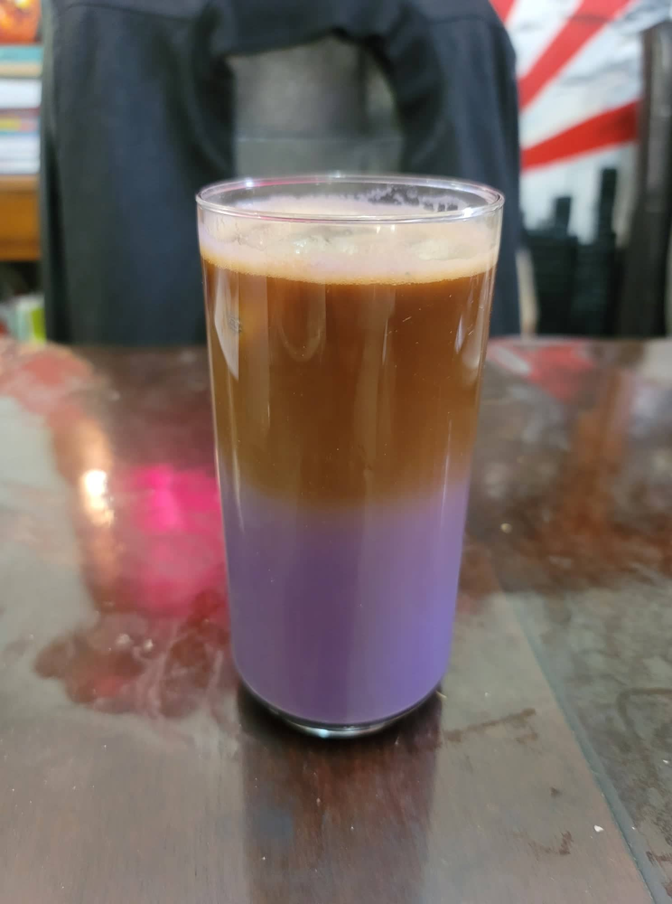

Ube Latte

Ingredients:
- 2 tbsp Ube halaya
- 1/8 tsp Ube extract
- 3/4 cup + 1 tbsp Milk
- 1 tbsp Sugar, or to taste
- 1/2 cup Espresso
- 1/2 cup Ice, about 4 ice cubes
Instructions:
- Combine the ube halaya, ube extract, sugar, and milk into a tall glass and mix until homogenous. A milk frother would make this step substantially easier.
- Add in the ice. Then hold a spoon at a 45 degree angle to the wall of the glass above the ube milk. Slowly pour the espresso into the spoon so that it floats on top of the ube milk. Serve immediately and stir before consuming.